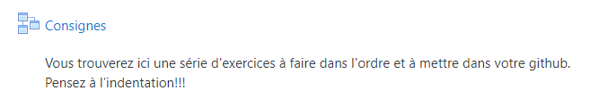
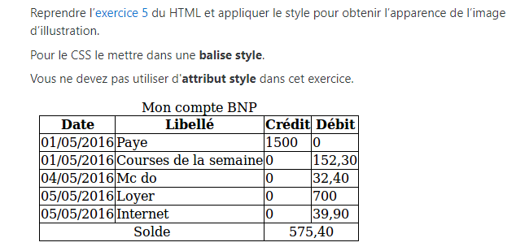
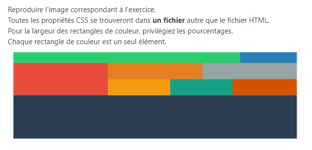
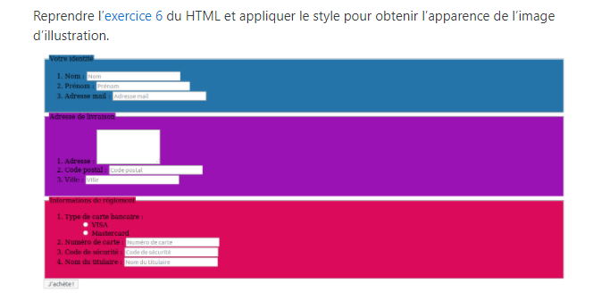
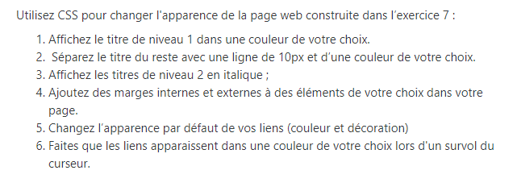
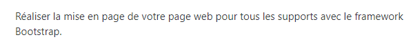

index de mes exos CSS avec La MANU
Vers les differents exercices:

Exercice 1
voir Exo 1
Exercice 2
voir Exo 2

Exercice 3
voir Exo 3
voir correction Exo 3 par Catherine
voir correction Exo 3 par Nora (avec Grid)

Exercice 4
voir Exo 4

Exercice 5
voir Exo 5

Exercice 6
voir Exo 6

Exercice 7
voir Exo 7
Exercice Parallax
Close